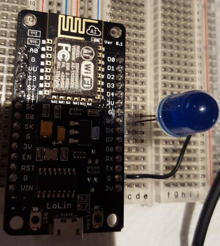

Going from 0 to turning a LED on and off in 5 minutes
You need:
- Android/iPhone
- the Blynk app
- esp8266 based module (in this case a NodeMCU devkit) running the Arduino firmware
- a LED (plus resistor if not 3.3v tolerant)
- a solderless breadboard
- Arduino IDE
Step 1: install
Go to http://www.blynk.cc/getting-started/ it has links for the Android and iPhone versions of the app, install the approperiate one and also install the Blynk Arduino Library
Step 2: start a Blynk Project
Open up the Blynk App on your phone and follow the pictures!
Step 3: the devkit, the board
Place the devkit on the board and place the LED so the longer pin goes connects with D5 and the short pin connects with ground. (Why D5, when we use gp14 on Blynk? Because the devkit messes up the numbering of the pins.)

Step 4: Arduino Code
On your computer, open up the Arduino IDE. Then you need to open up the Blynk example code, this is under File>Examples>Blynk>BoardsAndShields>ESP8266Standalone. This should open a very simple example file.
You need to add your Auth token (which you should have emailed to yourself) on line 34 char >auth[] = "YourTokenHere";
Then you need to replace "ssid","pass" on line 39 with the ssid and password of your wifi network.
Compile and upload that code to your NodeMCU Devkit.
Step 5: go!
If all went well, then you should be able to press play on your Blynk app, and use the button to controll the LED!

This work is licensed under a Attribution Share Alike Creative Commons license